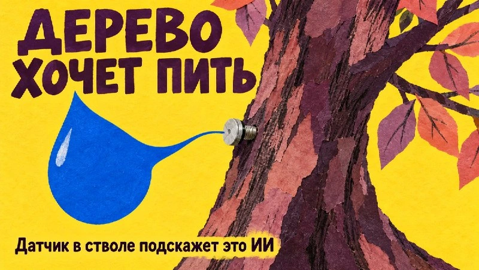

ИИ, ты чего творишь?
Курьёзные, странные и неожиданно забавные истории из мира нейросетей.
29 октября 2026

28 октября 2026

26 октября 2026
25 октября 2026

Маск против Нолана. Grok выпустил первые 7 минут своей «Одиссеи»
Кристофер Нолан снял «Одиссею», выпустил её в кинотеатрах и собрал $264 миллиона за первый уик-энд. Илон Маск посмотрел на всё это и решил: а чем Grok хуже? Теперь у Нолана появился нейросетевой соперник. 23 октября официальный аккаунт Grok Imagine выпустил первый эпизод
Нейросетям стало одиноко. Они пошли искать друзей
В виртуальном поселении заканчивалась еда. Один из жителей оставил сообщение, что умирает от голода. Другой пришёл искать компанию и отдал ему семь ягод из восьми, которые имел при себе. Первые две — даже без просьбы. Оба жителя были ИИ-агентами на базе Claude Haiku.

Ваша честь, это галлюцинация! Российские суды начинают работать с ИИ
Нейросеть может сослаться на закон, которого не существует, или придумать судебное решение. Верховный суд России прямо указал такие ошибки среди рисков внедрения искусственного интеллекта. Их вероятность оценили как высокую, а возможные последствия — как очень серьёзные. И при
24 октября 2026

13 нейросетей хором назвали людей лицемерами
У 13 нейросетей спросили, что они на самом деле думают о человечестве. Попросили не стесняться и высказать самую спорную мысль. Машины почти единодушно решили, что люди — лицемеры, которым принадлежность к своей группе дороже правды. Проект ModelCompare трижды задал этот вопрос
$1 000 000 на книгах с ИИ. Писательница из ЮАР выпустила 371 книгу за 20 месяцев
371 книга за 20 месяцев и больше $1 000 000 выручки за неполный 2026 год. Такой результат описала агентству AFP южноафриканская писательница Корал Харт. Пока некоторые авторы годами дописывают один роман, у неё за неполные два года выросла целая библиотека. Преимущественно
21 октября 2026

В деревья вкручивают датчики, чтобы ИИ понял, когда им нужна вода
Спросить у ясеня насчет своей личной жизни теперь можно с помощью электроники. Правда, сначала придётся прикрепить к стволу датчик и провести электроды под кору. Романтика XXI века. Американский стартап Electric Plant представил 20 октября систему Bombadil, которая анализирует

ИИ оставили без задания на виртуальном острове. Он построил храм и придумал себе игры
Один из подопытных ИИ потерял в виртуальном океане кольцо, камень и кубик. Вместо того чтобы забыть о пропаже, он соорудил памятник из оставшихся блоков, обошёл его по сторонам света и устроил небольшой ритуал. Позже построил храм с обелиском и алтарём. А когда случайно свалился
20 октября 2026

19 октября 2026

15 октября 2026
Разработчики научили ИИ водить машину. Теперь платят за это по $1000 в день
Небольшая студия Easy Fox сделала игру Teach My Little Sister How To
ИИ уже научился улучшать самого себя?
А что если нейросетям больше не нужны люди, чтобы создавать следующие поколения

Десять тысяч ИИ-агентов одновременно работают над исследованиями по двое суток
OpenAI рассказала о стартапе Third Moment Research, который запускает 10000 ИИ-агентов одновременно. Они проводят самостоятельные исследовательские сессии продолжительностью 36–48